Normal light microscopes can magnify objects up to about 1,500 times. Electron microscopes can magnify objects up to 1,000,000 times. Why can electron microscopes magnify images so much?
A microscope’s resolution depends on the wavelength of light used. The smaller the wavelength, the more a microscope can magnify. Light is a wave, and, as such, it has a wavelength associated with it. The wavelength of visible light, which is detected by the eyes, varies from about 700 nm to about 400 nm.
One of the startling conclusions about modern science is that electrons also act as waves. However, the wavelength of electrons is much, much shorter—about 0.5 to 1 nm. This allows electron microscopes to magnify 600–700 times more than light microscopes. This allows us to see even smaller features in a world that is invisible to the naked eye.
Atoms act the way they do because of their structure. We already know that atoms are composed of protons, neutrons, and electrons. Protons and neutrons are located in the nucleus, and electrons orbit around the nucleus. But we need to know the structural details to understand why atoms react the way they do.
Virtually everything we know about atoms ultimately comes from light. Before we can understand the composition of atoms (especially electrons), we need to understand the properties of light.
What we know as light is more properly called electromagnetic radiation. We know from experiments that light acts as a wave. As such, it can be described as having a frequency and a wavelength. The wavelengthThe distance between corresponding points in two adjacent light cycles. of light is the distance between corresponding points in two adjacent light cycles, and the frequencyThe number of cycles of light that pass a given point in one second. of light is the number of cycles of light that pass a given point in one second. Wavelength is typically represented by λ, the lowercase Greek letter lambda, while frequency is represented by ν, the lowercase Greek letter nu (although it looks like a Roman “vee,” it is actually the Greek equivalent of the letter “en”). Wavelength has units of length (meters, centimeters, etc.), while frequency has units of per second, written as s−1 and sometimes called a hertz (Hz). Figure 8.1 "Characteristics of Light Waves" shows how these two characteristics are defined.
Figure 8.1 Characteristics of Light Waves
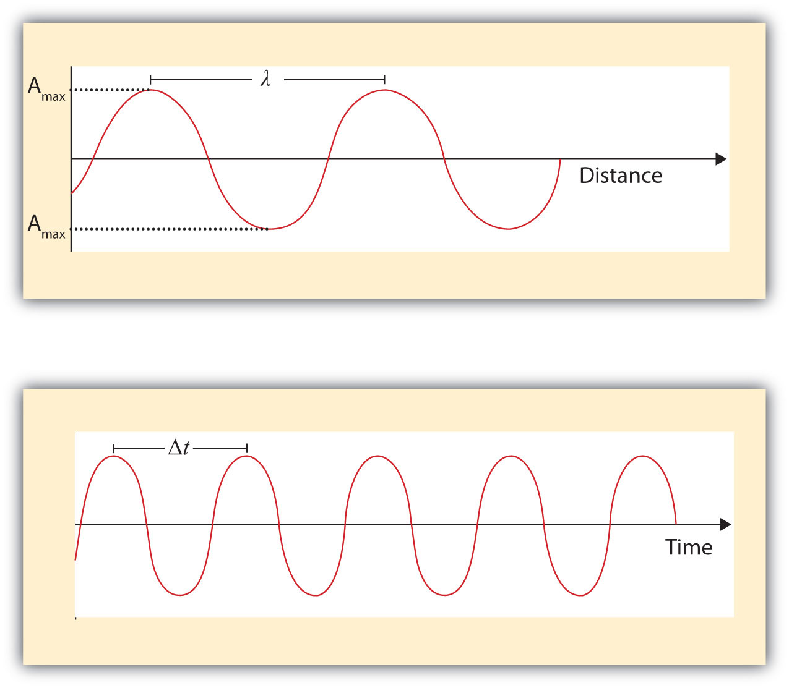Light acts as a wave and can be described by a wavelength λ and a frequency ν.
One property of waves is that their speed is equal to their wavelength times their frequency. That means we have
For light, however, speed is actually a universal constant when light is traveling through a vacuum (or, to a very good approximation, air). The measured speed of light (c) in a vacuum is 2.9979 × 108 m/s, or about 3.00 × 108 m/s. Thus, we have
Because the speed of light is a constant, the wavelength and the frequency of light are related to each other: as one increases, the other decreases and vice versa. We can use this equation to calculate what one property of light has to be when given the other property.
What is the frequency of light if its wavelength is 5.55 × 10−7 m?
Solution
We use the equation that relates the wavelength and frequency of light with its speed. We have
We divide both sides of the equation by 5.55 × 10−7 m and get
Note how the m units cancel, leaving s in the denominator. A unit in a denominator is indicated by a −1 power—s−1—and read as “per second.”
Test Yourself
What is the wavelength of light if its frequency is 1.55 × 1010 s−1?
Answer
0.0194 m, or 19.4 mm
Light also behaves like a package of energy. It turns out that for light, the energy of the “package” of energy is proportional to its frequency. (For most waves, energy is proportional to wave amplitude, or the height of the wave.) The mathematical equation that relates the energy (E) of light to its frequency is
where ν is the frequency of the light, and h is a constant called Planck’s constantThe proportionality constant between the frequency and the energy of light.. Its value is 6.626 × 10−34 J·s—a very small number that is another fundamental constant of our universe, like the speed of light. The units on Planck’s constant may look unusual, but these units are required so that the algebra works out.
What is the energy of light if its frequency is 1.55 × 1010 s−1?
Solution
Using the formula for the energy of light, we have
E = (6.626 × 10−34 J·s)(1.55 × 1010 s−1)Seconds are in the numerator and the denominator, so they cancel, leaving us with joules, the unit of energy. So
E = 1.03 × 10−23 JThis is an extremely small amount of energy—but this is for only one light wave.
Test Yourself
What is the frequency of a light wave if its energy is 4.156 × 10−20 J?
Answer
6.27 × 1013 s−1
Because a light wave behaves like a little particle of energy, light waves have a particle-type name: the photonThe name of a wave of light acting as a particle.. It is not uncommon to hear light described as photons.
Wavelengths, frequencies, and energies of light span a wide range; the entire range of possible values for light is called the electromagnetic spectrumThe full span of the possible wavelengths, frequencies, and energies of light.. We are mostly familiar with visible light, which is light having a wavelength range between about 400 nm and 700 nm. Light can have much longer and much shorter wavelengths than this, with corresponding variations in frequency and energy. Figure 8.2 "The Electromagnetic Spectrum" shows the entire electromagnetic spectrum and how certain regions of the spectrum are labeled. You may already be familiar with some of these regions; they are all light—with different frequencies, wavelengths, and energies.
Figure 8.2 The Electromagnetic Spectrum
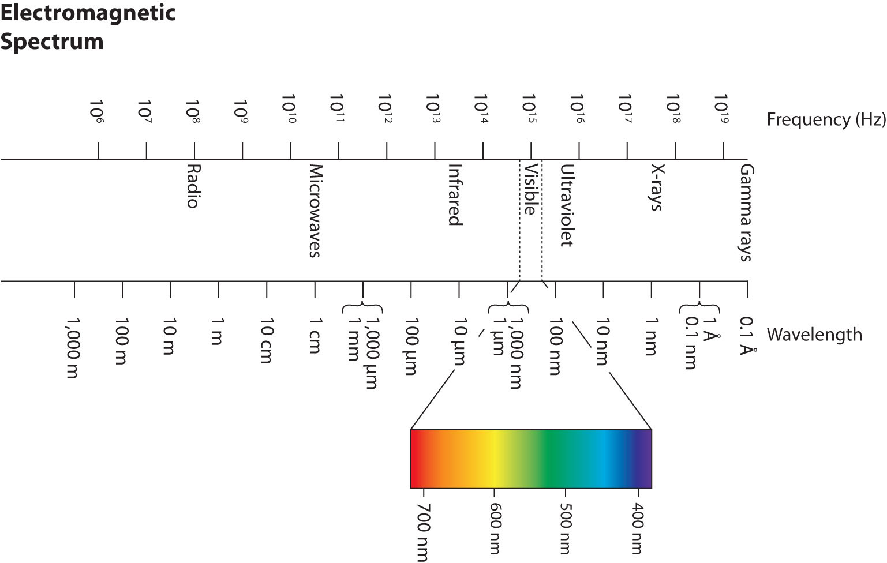The electromagnetic spectrum, with its various regions labeled. The borders of each region are approximate.
Describe the characteristics of a light wave.
What is a characteristic of a particle of light?
What is the frequency of light if its wavelength is 7.33 × 10−5 m?
What is the frequency of light if its wavelength is 1.226 m?
What is the frequency of light if its wavelength is 733 nm?
What is the frequency of light if its wavelength is 8.528 cm?
What is the wavelength of light if its frequency is 8.19 × 1014 s−1?
What is the wavelength of light if its frequency is 3.66 × 106 s−1?
What is the wavelength of light if its frequency is 1.009 × 106 Hz?
What is the wavelength of light if its frequency is 3.79 × 10−3 Hz?
What is the energy of a photon if its frequency is 5.55 × 1013 s−1?
What is the energy of a photon if its frequency is 2.06 × 1018 s−1?
What is the energy of a photon if its wavelength is 5.88 × 10−4 m?
What is the energy of a photon if its wavelength is 1.888 × 102 m?
Light has a wavelength and a frequency.
4.09 × 1012 s−1
4.09 × 1014 s−1
3.66 × 10−7 m
297 m
3.68 × 10−20 J
3.38 × 10−22 J
There are two fundamental ways of generating light: either heat an object up so hot it glows or pass an electrical current through a sample of matter (usually a gas). Incandescent lights and fluorescent lights generate light via these two methods, respectively.
A hot object gives off a continuum of light. We notice this when the visible portion of the electromagnetic spectrum is passed through a prism: the prism separates light into its constituent colors, and all colors are present in a continuous rainbow (part (a) in Figure 8.3 "Prisms and Light"). This image is known as a continuous spectrumAn image that contains all colors of light.. However, when electricity is passed through a gas and light is emitted and this light is passed though a prism, we see only certain lines of light in the image (part (b) in Figure 8.3 "Prisms and Light"). This image is called a line spectrumAn image that contains only certain colors of light.. It turns out that every element has its own unique, characteristic line spectrum.
Figure 8.3 Prisms and Light
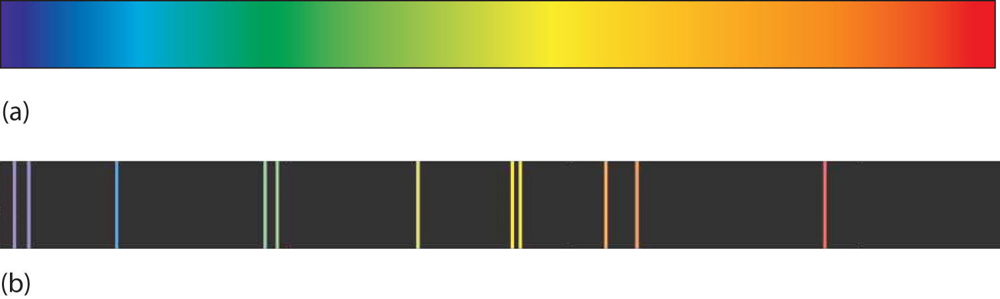(a) A glowing object gives off a full rainbow of colors, which are noticed only when light is passed through a prism to make a continuous spectrum. (b) However, when electricity is passed through a gas, only certain colors of light are emitted. Here are the colors of light in the line spectrum of Hg.
Why does the light emitted from an electrically excited gas have only certain colors, while light given off by hot objects has a continuous spectrum? For a long time, it was not well explained. Particularly simple was the spectrum of hydrogen gas, which could be described easily by an equation; no other element has a spectrum that is so predictable (Figure 8.4 "Hydrogen Spectrum"). Late-nineteenth-century scientists found that the positions of the lines obeyed a pattern given by the equation
where n = 3, 4, 5, 6,…, but they could not explain why this was so.
Figure 8.4 Hydrogen Spectrum
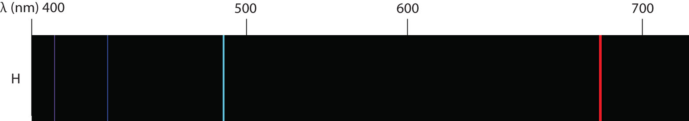The spectrum of hydrogen was particularly simple and could be predicted by a simple mathematical expression.
In 1913, the Danish scientist Niels Bohr suggested a reason why the hydrogen atom spectrum looked this way. He suggested that the electron in a hydrogen atom could not have any random energy, having only certain fixed values of energy that were indexed by the number n (the same n in the equation above and now called a quantum numberAn index that corresponds to a property of an electron, like its energy.). Quantities that have certain specific values are called quantizedWhen a quantity is restricted to having only certain values. values. Bohr suggested that the energy of the electron in hydrogen was quantized because it was in a specific orbit. Because the energies of the electron can have only certain values, the changes in energies can have only certain values (somewhat similar to a staircase: not only are the stair steps set at specific heights but the height between steps is fixed). Finally, Bohr suggested that the energy of light emitted from electrified hydrogen gas was equal to the energy difference of the electron’s energy states:
This means that only certain frequencies (and thus, certain wavelengths) of light are emitted. Figure 8.5 "Bohr’s Model of the Hydrogen Atom" shows a model of the hydrogen atom based on Bohr’s ideas.
Figure 8.5 Bohr’s Model of the Hydrogen Atom
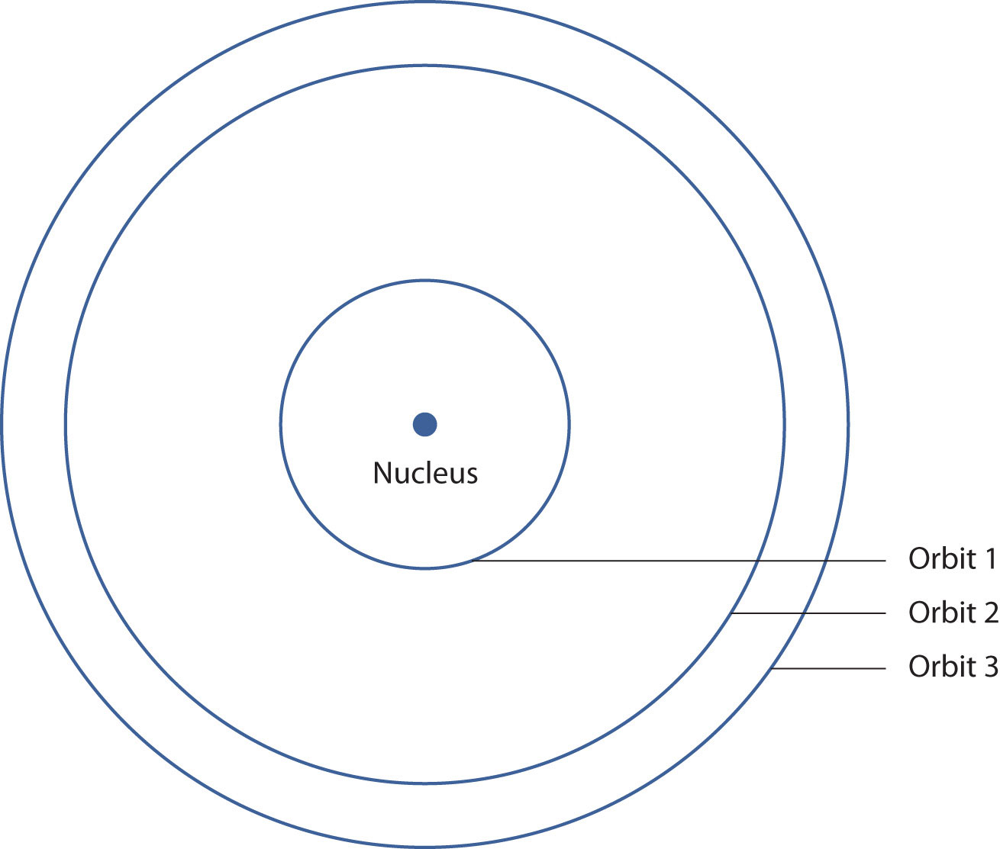Bohr’s description of the hydrogen atom had specific orbits for the electron, which had quantized energies.
Bohr’s ideas were useful but were applied only to the hydrogen atom. However, later researchers generalized Bohr’s ideas into a new theory called quantum mechanicsThe theory of electrons that treats them as a wave., which explains the behavior of electrons as if they were acting as a wave, not as particles. Quantum mechanics predicts two major things: quantized energies for electrons of all atoms (not just hydrogen) and an organization of electrons within atoms. Electrons are no longer thought of as being randomly distributed around a nucleus or restricted to certain orbits (in that regard, Bohr was wrong). Instead, electrons are collected into groups and subgroups that explain much about the chemical behavior of the atom.
In the quantum-mechanical model of an atom, the state of an electron is described by four quantum numbers, not just the one predicted by Bohr. The first quantum number is called the principal quantum numberThe index that largely determines the energy of an electron in an atom. Represented by . (n). The principal quantum number largely determines the energy of an electron. Electrons in the same atom that have the same principal quantum number are said to occupy an electron shellA term used to describe electrons with the same principal quantum number. of the atom. The principal quantum number can be any nonzero positive integer: 1, 2, 3, 4,….
Within a shell, there may be multiple possible values of the next quantum number, the angular momentum quantum numberAn index that affects the energy and the spatial distribution of an electron in an atom. Represented by ℓ. (ℓ). The ℓ quantum number has a minor effect on the energy of the electron but also affects the spatial distribution of the electron in three-dimensional space—that is, the shape of an electron’s distribution in space. The value of the ℓ quantum number can be any integer between 0 and n − 1:
ℓ = 0, 1, 2,…, n − 1Thus, for a given value of n, there are different possible values of ℓ:
| If n equals | ℓ can be |
|---|---|
| 1 | 0 |
| 2 | 0 or 1 |
| 3 | 0, 1, or 2 |
| 4 | 0, 1, 2, or 3 |
and so forth. Electrons within a shell that have the same value of ℓ are said to occupy a subshellA term used to describe electrons in a shell that have the same angular momentum quantum number. in the atom. Commonly, instead of referring to the numerical value of ℓ, a letter represents the value of ℓ (to help distinguish it from the principal quantum number):
| If ℓ equals | The letter is |
|---|---|
| 0 | s |
| 1 | p |
| 2 | d |
| 3 | f |
The next quantum number is called the magnetic quantum numberThe index that determines the orientation of the electron’s spatial distribution. Represented by . (mℓ). For any value of ℓ, there are 2ℓ + 1 possible values of mℓ, ranging from −ℓ to ℓ:
−ℓ ≤ mℓ ≤ ℓor
The following explicitly lists the possible values of mℓ for the possible values of ℓ:
| If ℓ equals | The values can be |
|---|---|
| 0 | 0 |
| 1 | −1, 0, or 1 |
| 2 | −2, −1, 0, 1, or 2 |
| 3 | −3, −2, −1, 0, 1, 2, or 3 |
The particular value of mℓ dictates the orientation of an electron’s distribution in space. When ℓ is zero, mℓ can be only zero, so there is only one possible orientation. When ℓ is 1, there are three possible orientations for an electron’s distribution. When ℓ is 2, there are five possible orientations of electron distribution. This goes on and on for other values of ℓ, but we need not consider any higher values of ℓ here. Each value of mℓ designates a certain orbitalThe specific set of principal, angular momentum, and magnetic quantum numbers for an electron.. Thus, there is only one orbital when ℓ is zero, three orbitals when ℓ is 1, five orbitals when ℓ is 2, and so forth. The mℓ quantum number has no effect on the energy of an electron unless the electrons are subjected to a magnetic field—hence its name.
The ℓ quantum number dictates the general shape of electron distribution in space (Figure 8.6 "Electron Orbitals"). Any s orbital is spherically symmetric (part (a) in Figure 8.6 "Electron Orbitals"), and there is only one orbital in any s subshell. Any p orbital has a two-lobed, dumbbell-like shape (part (b) in Figure 8.6 "Electron Orbitals"); because there are three of them, we normally represent them as pointing along the x-, y-, and z-axes of Cartesian space. The d orbitals are four-lobed rosettes (part (c) in Figure 8.6 "Electron Orbitals"); they are oriented differently in space (the one labeled has two lobes and a torus instead of four lobes, but it is equivalent to the other orbitals). When there is more than one possible value of mℓ, each orbital is labeled with one of the possible values. It should be noted that the diagrams in Figure 8.6 "Electron Orbitals" are estimates of the electron distribution in space, not surfaces electrons are fixed on.
Figure 8.6 Electron Orbitals
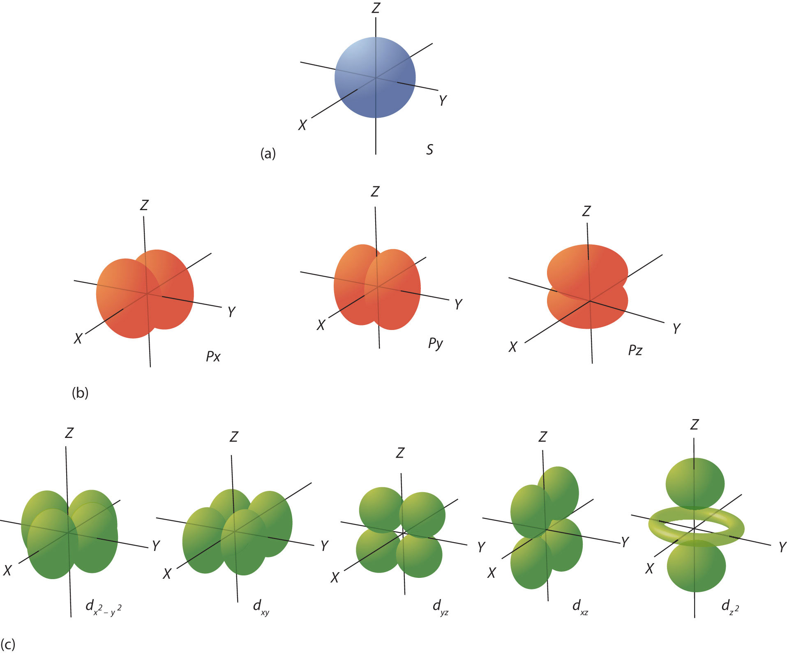(a) The lone s orbital is spherical in distribution. (b) The three p orbitals are shaped like dumbbells, and each one points in a different direction. (c) The five d orbitals are rosette in shape, except for the orbital, which is a “dumbbell + torus” combination. They are all oriented in different directions.
The final quantum number is the spin quantum numberThe index that indicates one of two spin states for an electron. Represented by . (ms). Electrons and other subatomic particles behave as if they are spinning (we cannot tell if they really are, but they behave as if they are). Electrons themselves have two possible spin states, and because of mathematics, they are assigned the quantum numbers +1/2 and −1/2. These are the only two possible choices for the spin quantum number of an electron.
Of the set of quantum numbers {n, ℓ, mℓ, ms}, which are possible and which are not allowed?
Solution
Test Yourself
Of the set of quantum numbers {n, ℓ, mℓ, ms}, which are possible and which are not allowed?
Answers
A neon light is basically an electrified tube with a small amount of gas in it. Electricity excites electrons in the gas atoms, which then give off light as the electrons go back into a lower energy state. However, many so-called “neon” lights don’t contain neon!
Although we know now that a gas discharge gives off only certain colors of light, without a prism or other component to separate the individual light colors, we see a composite of all the colors emitted. It is not unusual for a certain color to predominate. True neon lights, with neon gas in them, have a reddish-orange light due to the large amount of red-, orange-, and yellow-colored light emitted. However, if you use krypton instead of neon, you get a whitish light, while using argon yields a blue-purple light. A light filled with nitrogen gas glows purple, as does a helium lamp. Other gases—and mixtures of gases—emit other colors of light. Ironically, despite its importance in the development of modern electronic theory, hydrogen lamps emit little visible light and are rarely used for illumination purposes.
Differentiate between a continuous spectrum and a line spectrum.
Under what circumstances is a continuous spectrum formed? Under what circumstances is a line spectrum formed?
What is the wavelength of light from the hydrogen atom spectrum when n = 3?
What is the wavelength of light from the hydrogen atom spectrum when n = 5?
What are the restrictions on the principal quantum number?
What are the restrictions on the angular momentum quantum number?
What are the restrictions on the magnetic quantum number?
What are the restrictions on the spin quantum number?
What are the possible values for ℓ when n = 5?
What are the possible values for ℓ when n = 1?
What are the possible values for mℓ when ℓ = 3?
What are the possible values for mℓ when ℓ = 6?
Describe the shape of an s orbital.
Describe the shape of a p orbital.
Which of these sets of quantum numbers is allowed? If it is not, explain why.
Which of these sets of quantum numbers is allowed? If it is not, explain why.
A continuous spectrum is a range of light frequencies or wavelengths; a line spectrum shows only certain frequencies or wavelengths.
6.56 × 10−7 m, or 656 nm
The principal quantum number is restricted to being a positive whole number.
The absolute value of mℓ must be less than or equal to ℓ: |mℓ| ≤ ℓ.
ℓ can be 0, 1, 2, 3, or 4.
mℓ can be −3, −2, −1, 0, 1, 2, or 3.
An s orbital is spherical in shape.
Now that you know that electrons have quantum numbers, how are they arranged in atoms? The key to understanding electronic arrangement is summarized in the Pauli exclusion principleNo two electrons in an atom can have the same set of four quantum numbers.: no two electrons in an atom can have the same set of four quantum numbers. This dramatically limits the number of electrons that can exist in a shell or a subshell.
Electrons are typically organized around an atom by starting at the lowest possible quantum numbers first, which are the shells-subshells with lower energies. Consider H, an atom with a single electron only. Under normal conditions, the single electron would go into the n = 1 shell, which has only a single s subshell with one orbital (because mℓ can equal only 0). The convention is to label the shell-subshell combination with the number of the shell and the letter that represents the subshell. Thus, the electron goes in the 1s shell-subshell combination. It is usually not necessary to specify the mℓ or ms quantum numbers, but for the H atom, the electron has mℓ = 0 (the only possible value) and an ms of either +1/2 or −1/2.
The He atom has two electrons. The second electron can also go into the 1s shell-subshell combination but only if its spin quantum number is different from the first electron’s spin quantum number. Thus, the sets of quantum numbers for the two electrons are {1, 0, 0, +1/2} and {1, 0, 0, −1/2}. Notice that the overall set is different for the two electrons, as required by the Pauli exclusion principle.
The next atom is Li, with three electrons. However, now the Pauli exclusion principle implies that we cannot put that electron in the 1s shell-subshell because no matter how we try, this third electron would have the same set of four quantum numbers as one of the first two electrons. So this third electron must be assigned to a different shell-subshell combination. However, the n = 1 shell doesn’t have another subshell; it is restricted to having just ℓ = 0, or an s subshell. Therefore, this third electron has to be assigned to the n = 2 shell, which has an s (ℓ = 0) subshell and a p (ℓ = 1) subshell. Again, we usually start with the lowest quantum number, so this third electron is assigned to the 2s shell-subshell combination of quantum numbers.
The Pauli exclusion principle has the net effect of limiting the number of electrons that can be assigned a shell-subshell combination of quantum numbers. For example, in any s subshell, no matter what the shell number, there can be a maximum of only two electrons. Once the s subshell is filled up, any additional electrons must go to another subshell in the shell (if it exists) or to higher-numbered shell. A similar analysis shows that a p subshell can hold a maximum of six electrons. A d subshell can hold a maximum of 10 electrons, while an f subshell can have a maximum of 14 electrons. By limiting subshells to these maxima, we can distribute the available electrons to their shells and subshells.
How would the six electrons for C be assigned to the n and ℓ quantum numbers?
Solution
The first two electrons go into the 1s shell-subshell combination. Two additional electrons can go into the 2s shell-subshell, but now this subshell is filled with the maximum number of electrons. The n = 2 shell also has a p subshell, so the remaining two electrons can go into the 2p subshell. The 2p subshell is not completely filled because it can hold a maximum of six electrons.
Test Yourself
How would the 11 electrons for Na be assigned to the n and ℓ quantum numbers?
Answer
two 1s electrons, two 2s electrons, six 2p electrons, and one 3s electron
Now that we see how electrons are partitioned among the shells and subshells, we need a more concise way of communicating this partitioning. Chemists use an electron configurationThe representation of the organization of electrons in shells and subshells in an atom. to represent the organization of electrons in shells and subshells in an atom. An electron configuration simply lists the shell and subshell labels, with a right superscript giving the number of electrons in that subshell. The shells and subshells are listed in the order of filling.
For example, an H atom has a single electron in the 1s subshell. Its electron configuration is
H: 1s1He has two electrons in the 1s subshell. Its electron configuration is
He: 1s2The three electrons for Li are arranged in the 1s subshell (two electrons) and the 2s subshell (one electron). The electron configuration of Li is
Li: 1s22s1Be has four electrons, two in the 1s subshell and two in the 2s subshell. Its electron configuration is
Be: 1s22s2Now that the 2s subshell is filled, electrons in larger atoms must go into the 2p subshell, which can hold a maximum of six electrons. The next six elements progressively fill up the 2p subshell:
B: 1s22s22p1 C: 1s22s22p2 N: 1s22s22p3 O: 1s22s22p4 F: 1s22s22p5 Ne: 1s22s22p6Now that the 2p subshell is filled (all possible subshells in the n = 2 shell), the next electron for the next-larger atom must go into the n = 3 shell, s subshell.
What is the electron configuration for Na, which has 11 electrons?
Solution
The first two electrons occupy the 1s subshell. The next two occupy the 2s subshell, while the next six electrons occupy the 2p subshell. This gives us 10 electrons so far, with 1 electron left. This last electron goes into the n = 3 shell, s subshell. Thus, the electron configuration of Na is 1s22s22p63s1.
Test Yourself
What is the electron configuration for Mg, which has 12 electrons?
Answer
1s22s22p63s2
For larger atoms, the electron arrangement becomes more complicated. This is because after the 3p subshell is filled, filling the 4s subshell first actually leads to a lesser overall energy than filling the 3d subshell. Recall that while the principal quantum number largely dictates the energy of an electron, the angular momentum quantum number also has an impact on energy; by the time we get to the 3d and 4s subshells, we see overlap in the filling of the shells. Thus, after the 3p subshell is completely filled (which occurs for Ar), the next electron for K occupies the 4s subshell, not the 3d subshell:
K: 1s22s22p63s23p64s1, not 1s22s22p63s23p63d1For larger and larger atoms, the order of filling the shells and subshells seems to become even more complicated. There are some useful ways to remember the order, like that shown in Figure 8.7 "Electron Shell Filling Order". If you follow the arrows in order, they pass through the subshells in the order that they are filled with electrons in larger atoms. Initially, the order is the same as the expected shell-subshell order, but for larger atoms, there is some shifting around of the principal quantum numbers. However, Figure 8.7 "Electron Shell Filling Order" gives a valid ordering of filling subshells with electrons for most atoms.
Figure 8.7 Electron Shell Filling Order
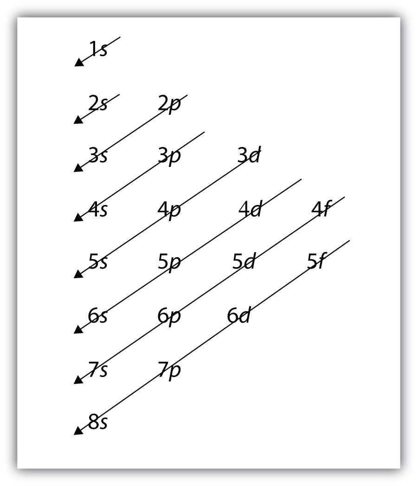Starting with the top arrow, follow each arrow. The subshells you reach along each arrow give the ordering of filling of subshells in larger atoms. The n = 5 and higher shells have more subshells, but only those subshells that are needed to accommodate the electrons of the known elements are given.
What is the predicted electron configuration for Sn, which has 50 electrons?
Solution
We will follow the chart in Figure 8.7 "Electron Shell Filling Order" until we can accommodate 50 electrons in the subshells in the proper order:
Sn: 1s22s22p63s23p64s23d104p65s24d105p2Verify by adding the superscripts, which indicate the number of electrons: 2 + 2 + 6 + 2 + 6 + 2 + 10 + 6 + 2 + 10 + 2 = 50, so we have placed all 50 electrons in subshells in the proper order.
Test Yourself
What is the electron configuration for Ba, which has 56 electrons?
Answer
1s22s22p63s23p64s23d104p65s24d105p66s2
As the previous example demonstrated, electron configurations can get fairly long. An abbreviated electron configurationAn electron configuration that uses one of the noble gases to represent the core of electrons up to that element. uses one of the elements from the last column of the periodic table, which contains what are called the noble gases, to represent the core of electrons up to that element. Then the remaining electrons are listed explicitly. For example, the abbreviated electron configuration for Li, which has three electrons, would be
Li: [He]2s1where [He] represents the two-electron core that is equivalent to He’s electron configuration. The square brackets represent the electron configuration of a noble gas. This is not much of an abbreviation. However, consider the abbreviated electron configuration for W, which has 74 electrons:
W: [Xe]6s24f145d4This is a significant simplification over an explicit listing of all 74 electrons. So for larger elements, the abbreviated electron configuration can be a very useful shorthand.
What is the abbreviated electron configuration for P, which has 15 electrons?
Solution
With 15 electrons, the electron configuration of P is
P: 1s22s22p63s23p3The first immediate noble gas is Ne, which has an electron configuration of 1s22s22p6. Using the electron configuration of Ne to represent the first 10 electrons, the abbreviated electron configuration of P is
P: [Ne]3s23p3Test Yourself
What is the abbreviated electron configuration for Rb, which has 37 electrons?
Answer
[Kr]5s1
There are some exceptions to the rigorous filling of subshells by electrons. In many cases, an electron goes from a higher-numbered shell to a lower-numbered but later-filled subshell to fill the later-filled subshell. One example is Ag. With 47 electrons, its electron configuration is predicted to be
Ag: [Kr]5s24d9However, experiments have shown that the electron configuration is actually
Ag: [Kr]5s14d10This, then, qualifies as an exception to our expectations. At this point, you do not need to memorize the exceptions; but if you come across one, understand that it is an exception to the normal rules of filling subshells with electrons, which can happen.
Give two possible sets of four quantum numbers for the electron in an H atom.
Give the possible sets of four quantum numbers for the electrons in a Li atom.
How many subshells are completely filled with electrons for Na? How many subshells are unfilled?
How many subshells are completely filled with electrons for Mg? How many subshells are unfilled?
What is the maximum number of electrons in the entire n = 2 shell?
What is the maximum number of electrons in the entire n = 4 shell?
Write the complete electron configuration for each atom.
Write the complete electron configuration for each atom.
Write the complete electron configuration for each atom.
Write the complete electron configuration for each atom.
Write the abbreviated electron configuration for each atom in Exercise 7.
Write the abbreviated electron configuration for each atom in Exercise 8.
Write the abbreviated electron configuration for each atom in Exercise 9.
Write the abbreviated electron configuration for each atom in Exercise 10.
{1, 0, 0, 1/2} and [1, 0, 0, −1/2}
Three subshells (1s, 2s, 2p) are completely filled, and one shell (3s) is partially filled.
8 electrons
In Chapter 3 "Atoms, Molecules, and Ions", we introduced the periodic table as a tool for organizing the known chemical elements. A periodic table is shown in Figure 8.8 "The Periodic Table". The elements are listed by atomic number (the number of protons in the nucleus), and elements with similar chemical properties are grouped together in columns.
Figure 8.8 The Periodic Table
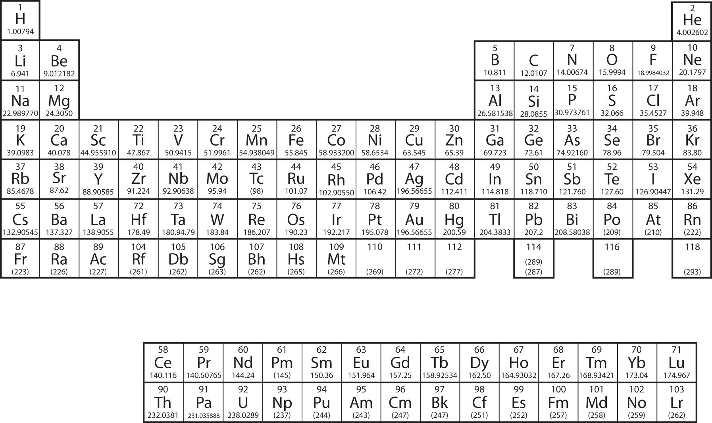Why does the periodic table have the structure it does? The answer is rather simple, if you understand electron configurations: the shape of the periodic table mimics the filling of the subshells with electrons.
Let us start with H and He. Their electron configurations are 1s1 and 1s2, respectively; with He, the n = 1 shell is filled. These two elements make up the first row of the periodic table (see Figure 8.9 "The 1").
Figure 8.9 The 1s Subshell
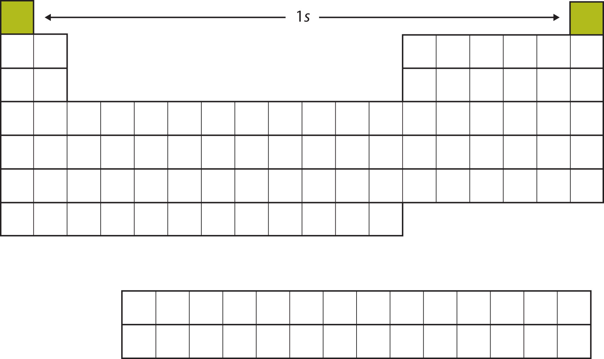H and He represent the filling of the 1s subshell.
The next two electrons, for Li and Be, would go into the 2s subshell. Figure 8.10 "The 2" shows that these two elements are adjacent on the periodic table.
Figure 8.10 The 2s Subshell
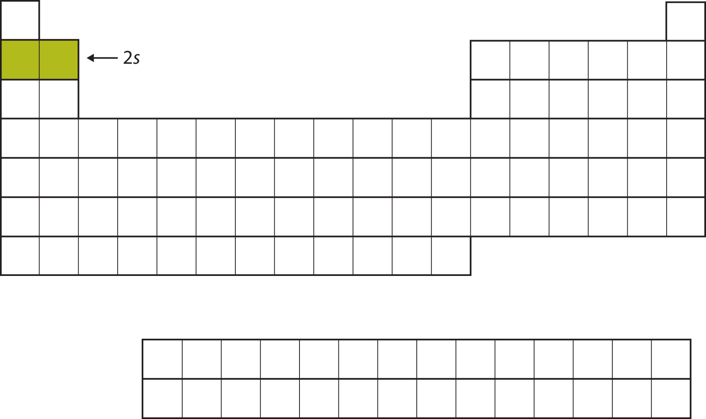In Li and Be, the 2s subshell is being filled.
For the next six elements, the 2p subshell is being occupied with electrons. On the right side of the periodic table, these six elements (B through Ne) are grouped together (Figure 8.11 "The 2").
Figure 8.11 The 2p Subshell
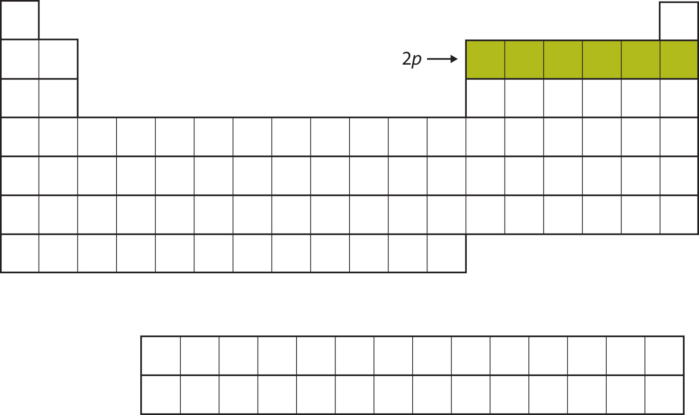For B through Ne, the 2p subshell is being occupied.
The next subshell to be filled is the 3s subshell. The elements when this subshell is being filled, Na and Mg, are back on the left side of the periodic table (Figure 8.12 "The 3").
Figure 8.12 The 3s Subshell
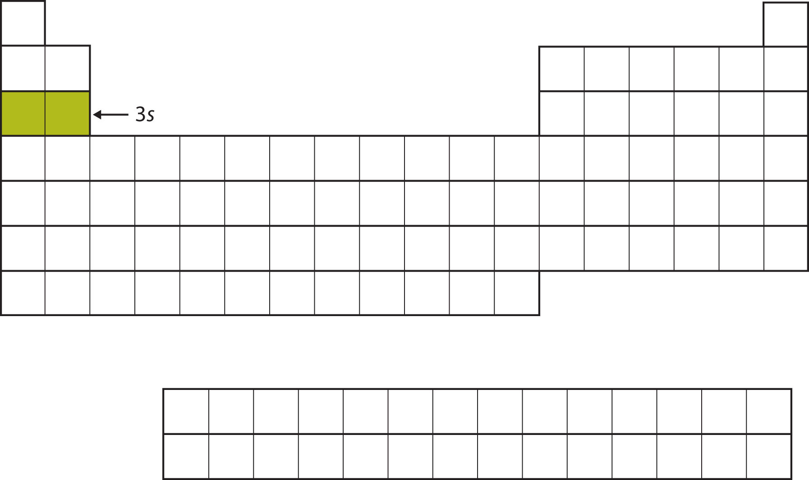Now the 3s subshell is being occupied.
Next, the 3p subshell is filled with the next six elements (Figure 8.13 "The 3").
Figure 8.13 The 3p Subshell
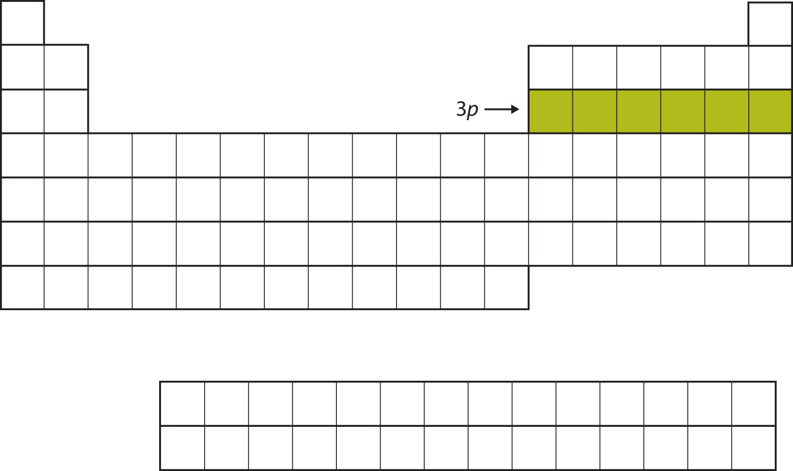Next, the 3p subshell is filled with electrons.
Instead of filling the 3d subshell next, electrons go into the 4s subshell (Figure 8.14 "The 4").
Figure 8.14 The 4s Subshell
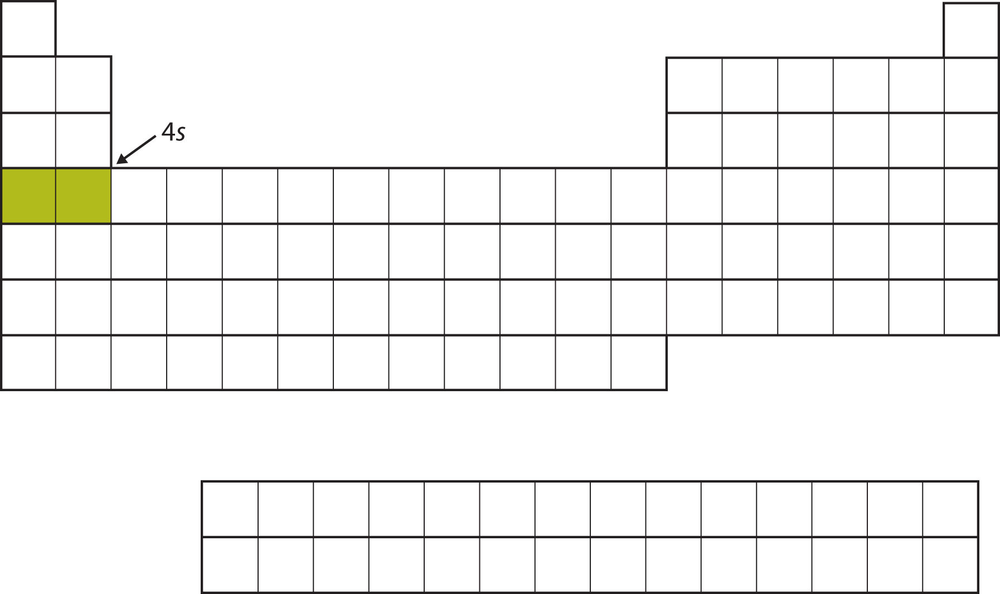The 4s subshell is filled before the 3d subshell. This is reflected in the structure of the periodic table.
After the 4s subshell is filled, the 3d subshell is filled with up to 10 electrons. This explains the section of 10 elements in the middle of the periodic table (Figure 8.15 "The 3").
Figure 8.15 The 3d Subshell
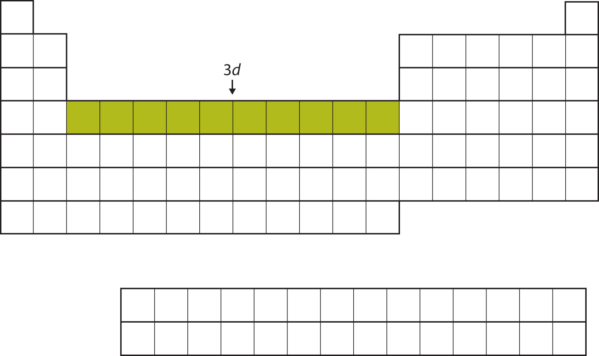The 3d subshell is filled in the middle section of the periodic table.
And so forth. As we go across the rows of the periodic table, the overall shape of the table outlines how the electrons are occupying the shells and subshells.
The first two columns on the left side of the periodic table are where the s subshells are being occupied. Because of this, the first two rows of the periodic table are labeled the s blockThe columns of the periodic table in which subshells are being occupied.. Similarly, the p blockThe columns of the periodic table in which subshells are being occupied. are the right-most six columns of the periodic table, the d blockThe columns of the periodic table in which subshells are being occupied. is the middle 10 columns of the periodic table, while the f blockThe columns of the periodic table in which subshells are being occupied. is the 14-column section that is normally depicted as detached from the main body of the periodic table. It could be part of the main body, but then the periodic table would be rather long and cumbersome. Figure 8.16 "Blocks on the Periodic Table" shows the blocks of the periodic table.
Figure 8.16 Blocks on the Periodic Table
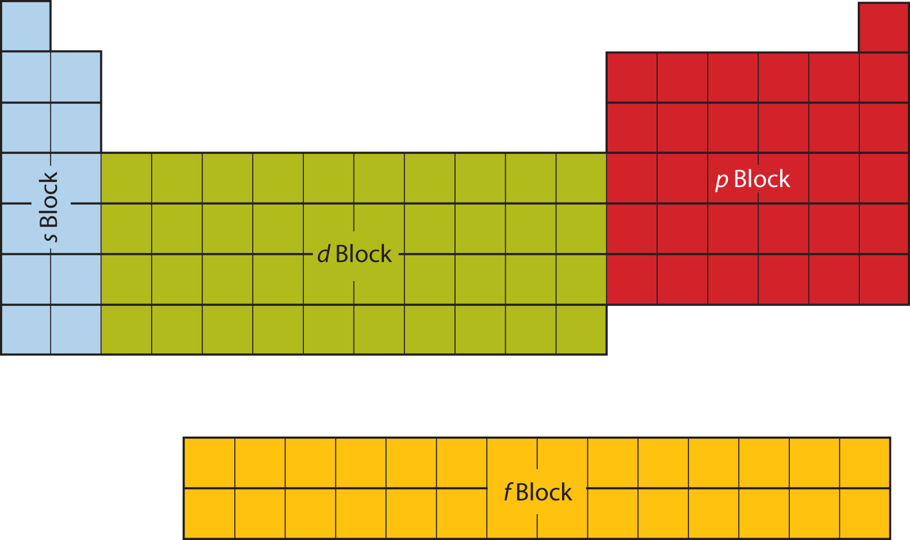The periodic table is separated into blocks depending on which subshell is being filled for the atoms that belong in that section.
The electrons in the highest-numbered shell, plus any electrons in the last unfilled subshell, are called valence electronsThe electrons in the highest-numbered shell, plus any electrons in the last unfilled subshell.; the highest-numbered shell is called the valence shellThe highest-numbered shell in an atom that contains electrons.. (The inner electrons are called core electrons.) The valence electrons largely control the chemistry of an atom. If we look at just the valence shell’s electron configuration, we find that in each column, the valence shell’s electron configuration is the same. For example, take the elements in the first column of the periodic table: H, Li, Na, K, Rb, and Cs. Their electron configurations (abbreviated for the larger atoms) are as follows, with the valence shell electron configuration highlighted:
| H: | 1s1 |
| Li: | 1s22s1 |
| Na: | [Ne]3s1 |
| K: | [Ar]4s1 |
| Rb: | [Kr]5s1 |
| Cs: | [Xe]6s1 |
They all have a similar electron configuration in their valence shells: a single s electron. Because much of the chemistry of an element is influenced by valence electrons, we would expect that these elements would have similar chemistry—and they do. The organization of electrons in atoms explains not only the shape of the periodic table but also the fact that elements in the same column of the periodic table have similar chemistry.
The same concept applies to the other columns of the periodic table. Elements in each column have the same valence shell electron configurations, and the elements have some similar chemical properties. This is strictly true for all elements in the s and p blocks. In the d and f blocks, because there are exceptions to the order of filling of subshells with electrons, similar valence shells are not absolute in these blocks. However, many similarities do exist in these blocks, so a similarity in chemical properties is expected.
Similarity of valence shell electron configuration implies that we can determine the electron configuration of an atom solely by its position on the periodic table. Consider Se, as shown in Figure 8.17 "Selenium on the Periodic Table". It is in the fourth column of the p block. This means that its electron configuration should end in a p4 electron configuration. Indeed, the electron configuration of Se is [Ar]4s23d104p4, as expected.
Figure 8.17 Selenium on the Periodic Table
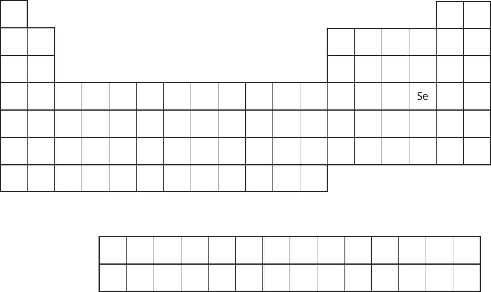From the element’s position on the periodic table, predict the valence shell electron configuration for each atom. See Figure 8.18 "Various Elements on the Periodic Table".
Solution
Test Yourself
From the element’s position on the periodic table, predict the valence shell electron configuration for each atom. See Figure 8.18 "Various Elements on the Periodic Table".
Answer
Figure 8.18 Various Elements on the Periodic Table
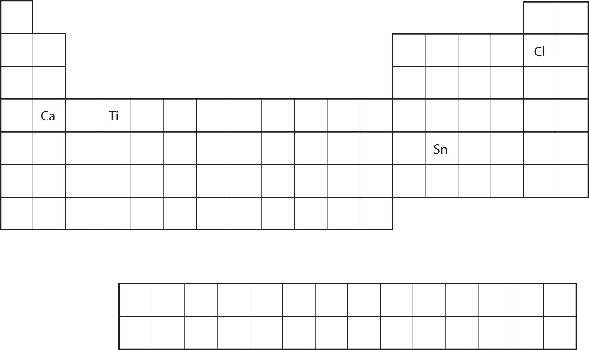The color of objects comes from a different mechanism than the colors of neon and other discharge lights. Although colored lights produce their colors, objects are colored because they preferentially reflect a certain color from the white light that shines on them. A red tomato, for example, is bright red because it reflects red light while absorbing all the other colors of the rainbow.
Many foods, such as tomatoes, are highly colored; in fact, the common statement “you eat with your eyes first” is an implicit recognition that the visual appeal of food is just as important as its taste. But what about processed foods?
Many processed foods have food colorings added to them. There are two types of food colorings: natural and artificial. Natural food colorings include caramelized sugar for brown; annatto, turmeric, and saffron for various shades of orange or yellow; betanin from beets for purple; and even carmine, a deep red dye that is extracted from the cochineal, a small insect that is a parasite on cacti in Central and South America. (That’s right: you may be eating bug juice!)
Some colorings are artificial. In the United States, the Food and Drug Administration currently approves only seven compounds as artificial colorings in food, beverages, and cosmetics:
Lower-numbered colors are no longer on the market or have been removed for various reasons. Typically, these artificial colorings are large molecules that absorb certain colors of light very strongly, making them useful even at very low concentrations in foods and cosmetics. Even at such low amounts, some critics claim that a small portion of the population (especially children) is sensitive to artificial colorings and urge that their use be curtailed or halted. However, formal studies of artificial colorings and their effects on behavior have been inconclusive or contradictory. Despite this, most people continue to enjoy processed foods with artificial coloring (like those shown in the accompanying figure).
Artificial food colorings are found in a variety of food products, such as processed foods, candies, and egg dyes. Even pet foods have artificial food coloring in them, although it’s likely that the animal doesn’t care!
Source: Photo courtesy of Matthew Bland, http://www.flickr.com/photos/matthewbland/3111904731.
Where on the periodic table are s subshells being occupied by electrons?
Where on the periodic table are d subshells being occupied by electrons?
In what block is Ra found?
In what block is Br found?
What are the valence shell electron configurations of the elements in the second column of the periodic table?
What are the valence shell electron configurations of the elements in the next-to-last column of the periodic table?
What are the valence shell electron configurations of the elements in the first column of the p block?
What are the valence shell electron configurations of the elements in the last column of the p block?
From the element’s position on the periodic table, predict the electron configuration of each atom.
From the element’s position on the periodic table, predict the electron configuration of each atom.
From the element’s position on the periodic table, predict the electron configuration of each atom.
From the element’s position on the periodic table, predict the electron configuration of each atom.
From the element’s position on the periodic table, predict the electron configuration of each atom.
From the element’s position on the periodic table, predict the electron configuration of each atom.
the first two columns
the s block
ns2
ns2np1
One of the reasons the periodic table is so useful is because its structure allows us to qualitatively determine how some properties of the elements vary versus their position on the periodic table. The variation of properties versus position on the periodic table is called periodic trendsVariation of properties versus position on the periodic table.. There is no other tool in science that allows us to judge relative properties of a class of objects like this, which makes the periodic table a very useful tool. Many periodic trends are general. There may be a few points where an opposite trend is seen, but there is an overall trend when considered across a whole row or down a whole column of the periodic table.
The first periodic trend we will consider atomic radius. The atomic radiusAn indication of the size of the atom. is an indication of the size of an atom. Although the concept of a definite radius of an atom is a bit fuzzy, atoms behave as if they have a certain radius. Such radii can be estimated from various experimental techniques, such as the x-ray crystallography of crystals.
As you go down a column of the periodic table, the atomic radii increase. This is because the valence electron shell is getting a larger and there is a larger principal quantum number, so the valence shell lies physically farther away from the nucleus. This trend can be summarized as follows:
where PT stands for periodic table. Going across a row on the periodic table, left to right, the trend is different. This is because although the valence shell maintains the same principal quantum number, the number of protons—and hence the nuclear charge—is increasing as you go across the row. The increasing positive charge casts a tighter grip on the valence electrons, so as you go across the periodic table, the atomic radii decrease. Again, we can summarize this trend as follows:
Figure 8.19 "Atomic Radii Trends on the Periodic Table" shows spheres representing the atoms of the s and p blocks from the periodic table to scale, showing the two trends for the atomic radius.
Figure 8.19 Atomic Radii Trends on the Periodic Table
Although there are some reversals in the trend (e.g., see Po in the bottom row), atoms generally get smaller as you go across the periodic table and larger as you go down any one column. Numbers are the radii in pm.
Referring only to a periodic table and not to Figure 8.19 "Atomic Radii Trends on the Periodic Table", which atom is larger in each pair?
Solution
Test Yourself
Referring only to a periodic table and not to Figure 8.19 "Atomic Radii Trends on the Periodic Table", which atom is smaller, Ca or Br?
Answer
Br
Ionization energy (IE)The amount of energy required to remove an electron from an atom in the gas phase. is the amount of energy required to remove an electron from an atom in the gas phase:
IE is usually expressed in kJ/mol of atoms. It is always positive because the removal of an electron always requires that energy be put in (i.e., it is endothermic). IE also shows periodic trends. As you go down the periodic table, it becomes easier to remove an electron from an atom (i.e., IE decreases) because the valence electron is farther away from the nucleus. Thus,
However, as you go across the periodic table and the electrons get drawn closer in, it takes more energy to remove an electron; as a result, IE increases:
Figure 8.20 "Ionization Energy on the Periodic Table" shows values of IE versus position on the periodic table. Again, the trend isn’t absolute, but the general trends going across and down the periodic table should be obvious.
Figure 8.20 Ionization Energy on the Periodic Table
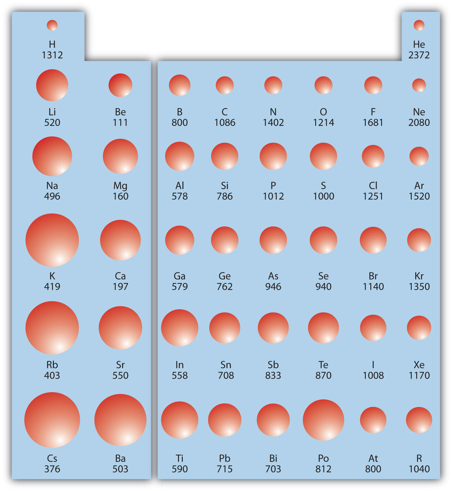Values are in kJ/mol.
IE also shows an interesting trend within a given atom. This is because more than one IE can be defined by removing successive electrons (if the atom has them to begin with):
A(g) → A+(g) + e− IE1 A+(g) → A2+(g) + e− IE2 A2+(g) → A3+(g) + e− IE3and so forth.
Each successive IE is larger than the previous because an electron is being removed from an atom with a progressively larger positive charge. However, IE takes a large jump when a successive ionization goes down into a new shell. For example, the following are the first three IEs for Mg, whose electron configuration is 1s22s22p63s2:
Mg(g) → Mg+(g) + e− IE1 = 738 kJ/mol Mg+(g) → Mg2+(g) + e− IE2 = 1,450 kJ/mol Mg2+(g) → Mg3+(g) + e− IE3 = 7,734 kJ/molThe second IE is twice the first, which is not a surprise: the first IE involves removing an electron from a neutral atom, while the second one involves removing an electron from a positive ion. The third IE, however, is over five times the previous one. Why is it so much larger? Because the first two electrons are removed from the 3s subshell, but the third electron has to be removed from the n = 2 shell (specifically, the 2p subshell, which is lower in energy than the n = 3 shell). Thus, it takes much more energy than just overcoming a larger ionic charge would suggest. It is trends like this that demonstrate that electrons are organized in atoms in groups.
Which atom in each pair has the larger IE?
Solution
Test Yourself
Which atom has the lower ionization energy, C or F?
Answer
C
The opposite of IE is described by electron affinity (EA)The energy change when a gas-phase atom accepts an electron., which is the energy change when a gas-phase atom accepts an electron:
EA is also usually expressed in kJ/mol. EA also demonstrates some periodic trends, although they are less obvious than the other periodic trends discussed previously. Generally, as you go across the periodic table, EA increases its magnitude:
There is not a definitive trend as you go down the periodic table; sometimes EA increases, sometimes it decreases. Figure 8.21 "Electron Affinity on the Periodic Table" shows EA values versus position on the periodic table for the s- and p-block elements. The trend isn’t absolute, especially considering the large positive EA values for the second column. However, the general trend going across the periodic table should be obvious.
Figure 8.21 Electron Affinity on the Periodic Table
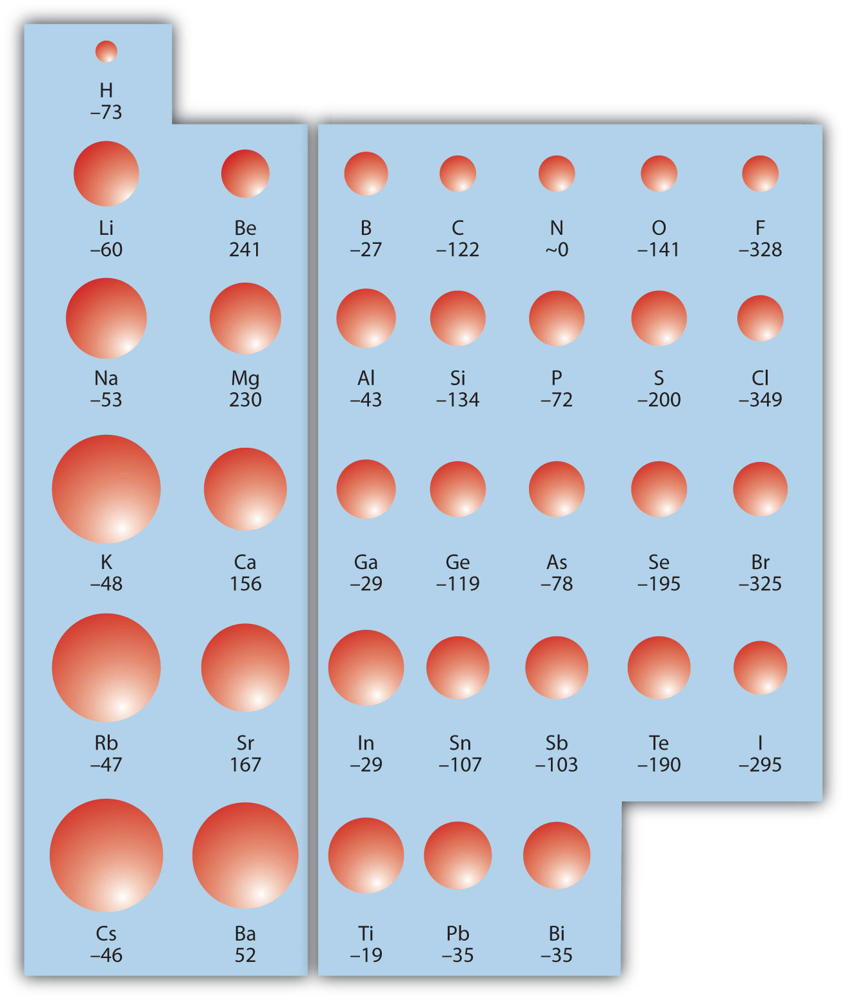Values are in kJ/mol.
Predict which atom in each pair will have the highest magnitude of EA.
Solution
Test Yourself
Predict which atom will have the highest magnitude of EA, As or Br.
Answer
Br
Write a chemical equation with an IE energy change.
Write a chemical equation with an EA energy change.
State the trends in atomic radii as you go across and down the periodic table.
State the trends in IE as you go across and down the periodic table.
Which atom of each pair is larger?
Which atom of each pair is larger?
Which atom of each pair is larger?
Which atom of each pair is larger?
Which atom has the higher IE?
Which atom has the higher IE?
Which atom has the higher IE?
Which atom has the higher IE?
A third-row element has the following successive IEs: 738; 1,450; 7,734; and 10,550 kJ/mol. Identify the element.
A third-row element has the following successive IEs: 1,012; 1,903; 2,912; 4,940; 6,270; and 21,300 kJ/mol. Identify the element.
For which successive IE is there a large jump in IE for Ca?
For which successive IE is there a large jump in IE for Al?
Which atom has the greater magnitude of EA?
Which atom has the greater magnitude of EA?
Na(g) → Na+(g) + e− ΔH = IE (answers will vary)
As you go across, atomic radii decrease; as you go down, atomic radii increase.
Mg
The third IE shows a large jump in Ca.
What is the frequency of light if its wavelength is 1.00 m?
What is the wavelength of light if its frequency is 1.00 s−1?
What is the energy of a photon if its wavelength is 1.00 meter?
What is the energy of a photon if its frequency is 1.00 s−1?
If visible light is defined by the wavelength limits of 400 nm and 700 nm, what is the energy range for visible light photons?
Domestic microwave ovens use microwaves that have a wavelength of 122 mm. What is the energy of one photon of this microwave?
Use the equation for the wavelengths of the lines of light in the H atom spectrum to calculate the wavelength of light emitted when n is 7 and 8.
Use the equation for the wavelengths of the lines of light in the H atom spectrum to calculate the wavelengths of light emitted when n is 5 and 6.
Make a table of all the possible values of the four quantum numbers when the principal quantum number n = 5.
Make a table of all the possible values of mℓ and ms when ℓ = 4. What is the lowest value of the principal quantum number for this to occur?
Recently, Russian chemists reported experimental evidence of element 117. Use the periodic table to predict its valence shell electron configuration.
Bi (atomic number 83) is used in some stomach discomfort relievers. Using its place on the periodic table, predict its valence shell electron configuration.
Which atom has a higher ionization energy (IE), O or P?
Which atom has a higher IE, F or As?
Which atom has a smaller radius, As or Cl?
Which atom has a smaller radius, K or F?
How many IEs does an H atom have? Write the chemical reactions for the successive ionizations.
How many IEs does a Be atom have? Write the chemical reactions for the successive ionizations.
Based on what you know of electrical charges, do you expect Na+ to be larger or smaller than Na?
Based on what you know of electrical charges, do you expect Cl− to be larger or smaller than Cl?
3.00 × 108 s−1
1.99 × 10−22 J
4.97 × 10−19 J to 2.84 × 10−19 J
3.97 × 10−7 m and 3.89 × 10−7 m, respectively
| n | ℓ | mℓ | ms |
|---|---|---|---|
| 5 | 0 | 0 | 1/2 or −1/2 |
| 5 | 1 | −1, 0, 1 | 1/2 or −1/2 |
| 5 | 2 | −2, −1, 0, 1, 2 | 1/2 or −1/2 |
| 5 | 3 | −3, −2, −1, 0, 1, 2, 3 | 1/2 or −1/2 |
| 5 | 4 | −4, −3, −2, −1, 0, 1, 2, 3, 4 | 1/2 or −1/2 |
Element 117’s valence shell electron configuration should be 7s27p5.
O
Cl
H has only one IE: H → H+ + e−
smaller